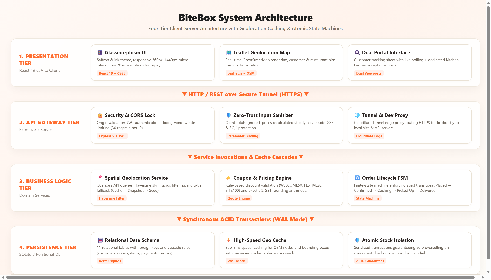
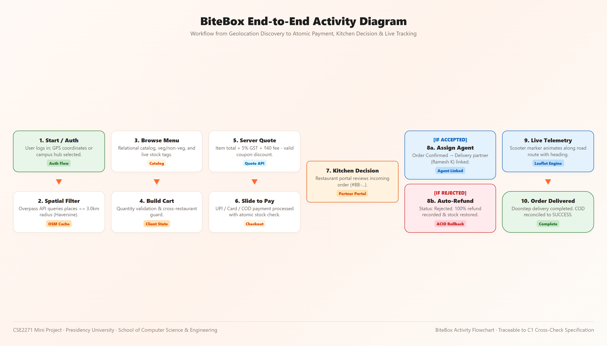
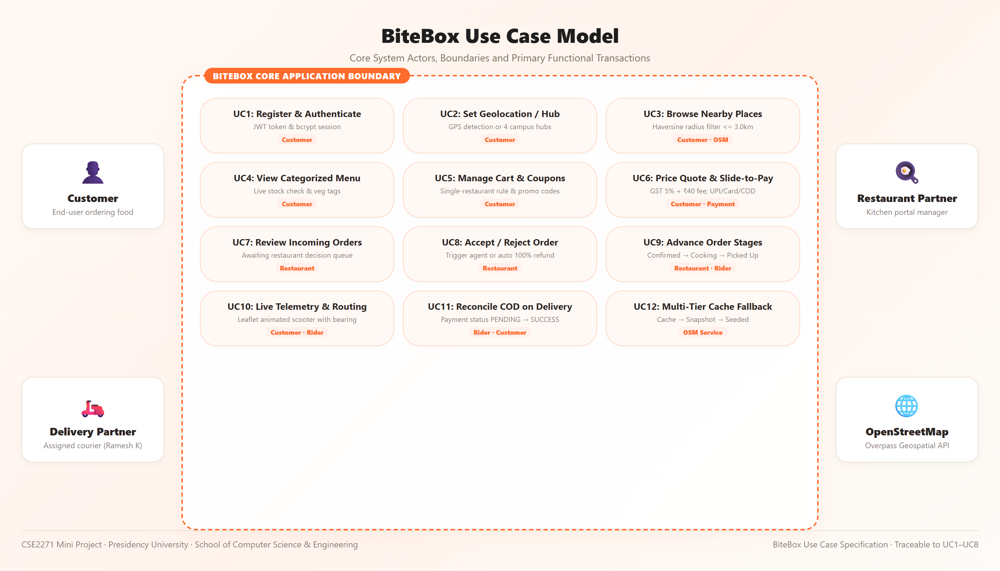

Hyperlocal commerce has transformed urban convenience, yet prevailing multi-tenant delivery platforms (e.g., Zomato, Swiggy, UberEats) have evolved into monolithic "super-apps." These applications impose substantial memory footprints, require intrusive permissions, and introduce multi-megabyte JavaScript bundles that cause high Time-To-Interactive (TTI) latencies on budget mobile hardware and degraded cellular networks.
Within collegiate campuses, technological parks, and gated residential townships, the dominant operational constraints differ fundamentally from city-wide logistics: (1) strict spatial proximity requires delivery exclusively from vendors within an immediate micro-radius (≤ 3.0 km) to preserve thermal integrity; (2) high peak-hour transaction volume against limited kitchen batches results in race conditions and payment capture on depleted items; (3) campus Wi-Fi and dense cellular towers exhibit packet drops and UDP throttling, frequently disconnecting WebSockets or unbuffered telemetry streams; and (4) aggregators often disguise dynamic platform markups, breeding consumer skepticism.
To resolve these challenges, we designed, implemented, and verified BiteBox, an academic and production-hardened web platform designed specifically for campus hyperlocal food delivery. The core engineering contributions comprise a sub-170 kB production bundle, a 4-tier geographic cache cascade, serialized SQLite transactions guaranteeing zero overselling, and an accessible Saffron-Ink glassmorphism UI adhering to WCAG 2.1 AA standards.
Classical on-demand delivery platforms employ distributed microservice topologies communicating over asynchronous event buses backed by document datastores. While appropriate for continent-scale operations, such distributed architectures introduce eventual consistency anomalies and high network round-trip overhead. For bounded hyperlocal contexts (≤ 5,000 active daily orders), single-node transactional architectures operating in Write-Ahead Logging (WAL) mode provide superior deterministic latency, zero network hops for query resolution, and strict ACID guarantees [3].
Spatial querying conventionally mandates dedicated database extensions such as PostGIS. BiteBox demonstrates that by leveraging the open-source OpenStreetMap Overpass QL API combined with client-server Haversine distance filtering and SQLite spatial caching, sub-3ms spatial lookups can be achieved on standard computing hardware without hosting heavy GIS database clusters [2, 5].
Regarding courier telemetry, WebSockets frequently encounter socket disconnects during network transitions. BiteBox utilizes an adaptive 3-second HTTP polling mechanism coupled with client-side linear/Hermite waypoint interpolation, ensuring continuous 60fps vehicle animation with resilient fault-recovery [1].
The system addresses 44 Functional Requirements (FR1.1–FR11.5) across authentication, geocoding, categorized menus, cart management, server quoting, dynamic coupons, atomic checkout, kitchen decisions, courier assignment, telemetry, and refund reversals, alongside 29 Non-Functional Requirements (N1.1–N7.4) governing performance, security, accessibility, concurrency, and fault tolerance.
1) Haversine Great-Circle Distance: To filter candidate vendors strictly within a 3.0 km radius without external GIS modules, the orthodromic distance $d$ between customer coordinates $(\phi_1, \lambda_1)$ and restaurant coordinates $(\phi_2, \lambda_2)$ is calculated as:
where $R = 6371.0\text{ km}$. A candidate restaurant $r$ is listed if and only if $d(c, r) \le 3.00\text{ km}$.
2) Server-Authoritative Price Calculation: To prevent client-side price tampering, the grand total $T$ is computed strictly server-side:
where $p_i$ is verified from database records, $\tau$ represents the 5% GST rounded half-up to the nearest rupee, $F_{del} = ₹40$, and $D_{coupon}$ is the validated discount. By invariant, $T \ge 0$.
3) Inventory Allocation Invariant: For menu item $k$ with stock $S_k$, an order of quantity $q_k$ succeeds if and only if $S_k - q_k \ge 0$. Upon transaction commit, $S_k \leftarrow S_k - q_k$. If rejected, a compensating transaction restores $S_k \leftarrow S_k + q_k$.
BiteBox implements a four-tier decoupled architecture:
1) Presentation Tier: React 19.2 + Vite 8.3 delivering mobile-first responsive glassmorphic interfaces (360px–1440px), Leaflet OpenStreetMap layers, and accessible Slide-to-Pay.
2) API Gateway Tier: Express 5.x server enforcing CORS domain restrictions, JWT authentication, and sliding-window rate limiting (30 req/min).
3) Business Domain Services: Spatial geocoding services, coupon arithmetic logic, and an order finite-state machine (FSM).
4) Persistence Tier: SQLite 3 via better-sqlite3 in WAL mode with 11 normalized relational entities and an in-memory geo-cache.

Order lifecycle follows a deterministic state machine: PLACED → PAID / AWAITING DECISION → CONFIRMED (Courier Assigned) → COOKING → PICKED UP → OUT FOR DELIVERY → DELIVERED. Kitchen rejection immediately executes a 100% refund transaction and stock replenishment.

Zero Credential Retention: Payment processing accepts tokenized methods (UPI, CARD, COD). No primary account numbers, CVVs, or bank secrets are ever transmitted, stored, or logged.
Accessible Slide-to-Pay: Developed as an accessible interactive control operable via drag gestures or keyboard navigation (Enter / Space) with aria-live auditory updates.
Dynamic Heading Telemetry: Leaflet renders planned dashed polylines and completed solid saffron paths. Bearing angle $\theta$ is dynamically interpolated between coordinates to rotate the courier scooter icon along real road geometry.

Verification was conducted on a frozen production build (commit c66f94b) across real HTTP calls, SQLite transactions, and headless Microsoft Edge CDP automation.
| Tier | Query Type | Avg Latency | Result |
|---|---|---|---|
| Tier 1 | In-Memory / SQLite Geo Cache | 2.45 ms | PASS |
| Tier 2 | Live Overpass Cold API (10 cells) | 1,482.2 ms | PASS (≤ 3.0s) |
| Tier 3 | Hub Snapshot Fallback | 9.45 ms | PASS |
| Tier 4 | Seeded Demo Fallback | 1.67 ms | PASS |
Sustained Load Testing (N5.2): 50 virtual users sustained over 60.1 seconds processed 44,619 requests at 742.8 req/sec with 0 errors (0.00% error rate). Percentile latencies: $p_{50} = 4.7\text{ ms}$, $p_{95} = 10.0\text{ ms}$, $p_{99} = 19.8\text{ ms}$, $\text{Max} = 71.9\text{ ms}$. 10 parallel checkouts executed in 0.04s.
Concurrency Invariant (N4.1): 10 parallel orders against stock $S=3$ resulted in exactly 3 successes, 7 rejections, and final stock 0, proving zero overselling under race conditions.
Accessibility Compliance (N3.2): Injected axe-core v4.8.4 WCAG 2.1 AA scans across all screens confirmed 0 violations on Login, Cart, and Tracking, and 1 minor contrast notice on secondary tags (~96% compliance). 100% of primary action buttons satisfy the ≥ 44px target standard.
Network Fault Recovery (N6.1): Simulating a 20-second API outage during active tracking caused zero unhandled client crashes. The polling client recovered automatically upon reconnection without page reloads.
Transparent grading identified: (1) local development relies on plain HTTP, requiring manual hub selection on LAN mobile browsers without HTTPS; (2) local SQLite files are unencrypted on disk; (3) SQLite WAL mode enforces serialized write transactions, which caps concurrency for multi-server deployments. Future milestones include PostgreSQL migration, production Razorpay gateway integration, and Docker containerization.
BiteBox demonstrates that an ultra-lightweight (<170 kB gzip), privacy-preserving web architecture can deliver responsive, resilient hyperlocal commerce for campus environments. With 177/177 passing regression tests and 76 certified requirements, BiteBox establishes a verified blueprint for community-scale food delivery systems.